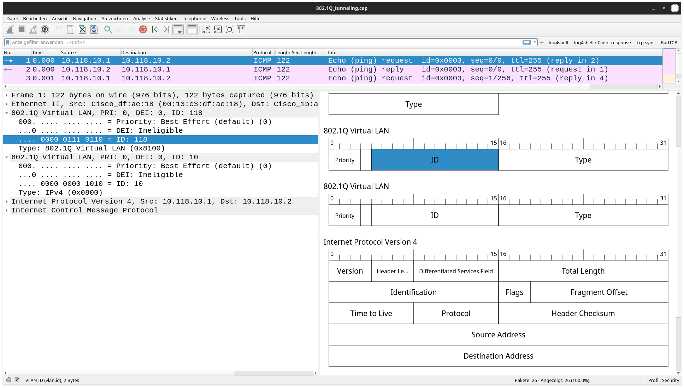

IT-Technik Netzwerkgrundlagen
VLANs stellen eine Möglichkeit dar, ein physisches geswitchtes Netzwerk in mehrere virtuelle Netzwerke (!nicht zu verwechseln mit virtuellen Netzwerkschnittstellen!) aufzuteilen.
Das VLAN-Protokoll ist in der IEEE 802.1Q definiert.
Die einfachste Möglichkeit ein VLAN einzurichten, besteht darin an einem Switch, der VLAN-fähig ist, für jeden Port (jede Netzwerkschnittstelle) festzulegen, zu welchen VLAN dieser und damit die angeschlossenen Geräte gehören.
Die alternative ist es, das VLAN dynamisch zu konfigurieren. Das bedeutet, dass Geräte aufgrund ihrer MAC- oder IP-Adresse einem VLAN zugeordnet werden.
Es ist auch möglich einzelne Datenpakete aufgrund ihrer TCP- / UDP-Portnummer einem VLAN zuzuordnen.
Sollen Daten zwischen zwei Switchen oder einem Switch und einem Router für mehrere VLANs über eine gemeinsame Datenleitung transportiert werden, wird diese als Trunk bezeichnet.
Auf dem Switch wird ein Port als Trunk-Port konfiguriert und festgelegt, welche VLANs über diese Leitung transportiert werden.
Jedes Datenpaket bekommt nun (pro VLAN) einen Tag – einen zusätzlichen Header, der als wichtigste Information die 12 Bit lange VLAN-ID enthält. Damit können 212 = 4096 VLANs definiert werden.

Abbildung 1: Datenpaket mit 2 VLAN-Tags